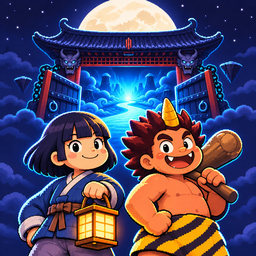
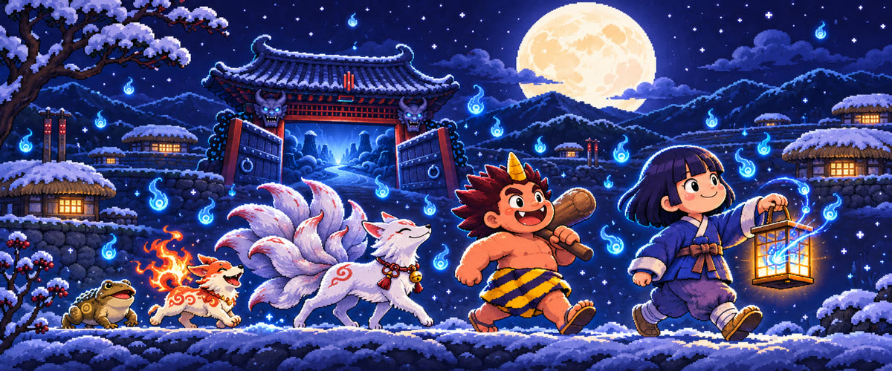
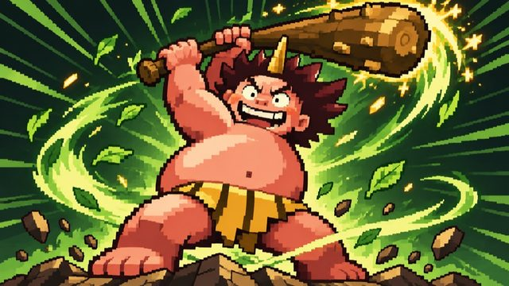
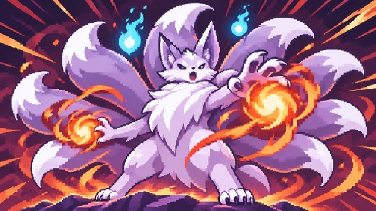
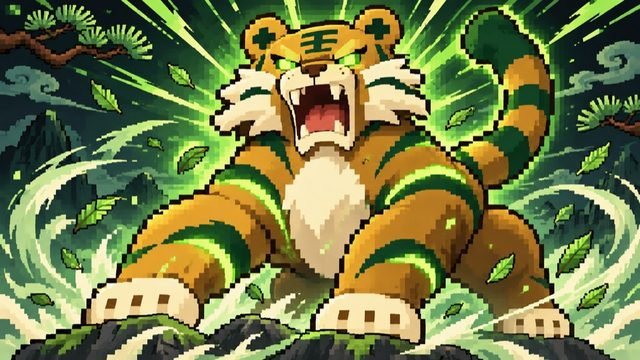
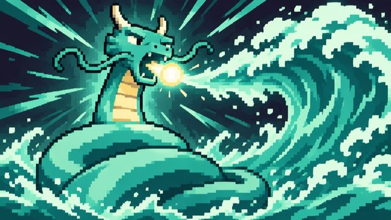
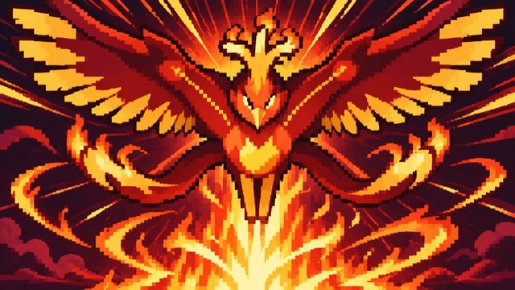
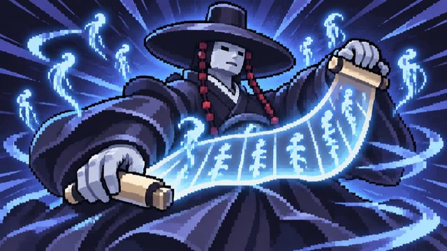

Only red beans were left scattered across the yard, and a dokkaebi who had slept in the attic chest for twelve years came tumbling out. Twelve-year-old Sol sets off with that dokkaebi to bring Grandma back from the Gate of Jeoseung, the land of the dead.
Auto-battler roguelike42 yogoe3 endingsNo ads, no in-app purchasesOffline
Out December 3 · Pre-order now on the App Store.
Launch price $0.49 through December 22, then $0.99

A launch event runs from release day, December 3, through December 22, the day of the solstice in Korea. During the event, every chapter you clear gives 5 extra Soulfire. Soulfire buys permanent upgrades for your party at the village shrine after each expedition.
Yogoe are the spirits and monsters of old Korean tales: the nine-tailed gumiho, the mischievous dokkaebi, the iron-eating bulgasari and dozens more.
When the sky split open that night, five pages of the Register of Jeoseung were scattered across the land. Each page holds human lifespans, and the great yogoe who picked them up are using them for their own ends. Sol needs all five pages back to reach the gate.
"That's... something you should hear from her. We just have to bring her back, right?"Ttugi the dokkaebi
When Ttugi knocks his club, the dokkaebi market opens. Each night you recruit yogoe and place them in two rows, two in front and three behind, and then the battle plays out on its own. Your job is to decide who comes along and where they stand.
Three copies of the same yogoe rank it up, and Rank 3 is its final form. Stronger tiers only show up as the night grows late, so every night you weigh growing what you have against waiting for something better.
Every yogoe carries one of the Five Elements: Wood, Fire, Earth, Metal or Water. Elements that overcome their foes deal extra damage. Neighbors in your own line trade energy too: a yogoe next to an element that feeds it starts the battle stronger, and one next to an element that overcomes it loses a little Attack. A single swap in the line often decides the fight.
There are 42 yogoe in all. Each has one trait and one special move, and when its Energy is full the move goes off with a cut-in that sweeps across the screen.






The road runs from the fields of Solmoegol through the deep mountain of Baegun Ridge, Misty Harbor, Iron Wail Pass and the burned palace of Hwagung, all the way to the Gate of Jeoseung. Each region has its own yogoe blocking the way and a boss holding a page of the Register. Listen to the yogoe you meet on the road and you slowly learn why Grandma was taken. The choice you make at the gate leads to one of three endings.
Every chapter hides two extra stories. They open when you clear a chapter with certain yogoe, or reach the end without a single loss. Six hidden yogoe never appear at the market on their own. They come only after you carry out a certain set of deeds, such as winning three nights in a row with both house guardian spirits in your party.
Soulfire collected on each expedition buys permanent upgrades at the village shrine. After your first ending, Register levels unlock: enemies grow stronger and you earn more Soulfire.